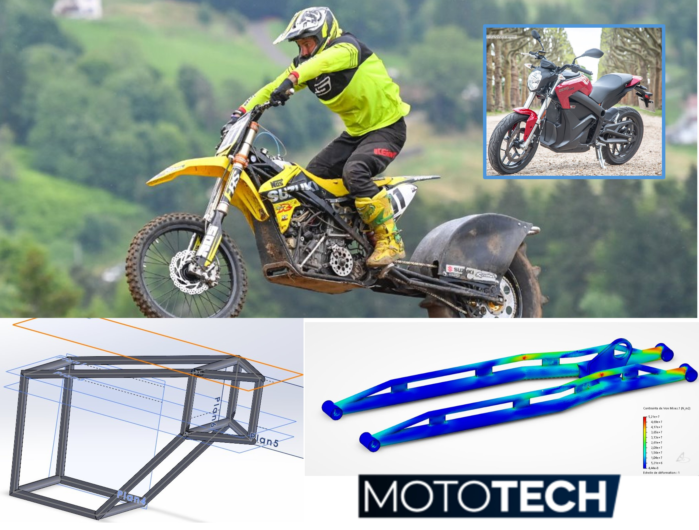

Projet AMIE-E
Transformer une moto électrique de série, une Zero SR, en machine de compétition pour le championnat de France de montée impossible. Le projet consiste à adapter la moto à cette discipline, en repensant sa partie cycle pour qu'elle encaisse les efforts d'une course exigeante.
- Conception mécanique en équipe : allongement du bras oscillant, fabriqué sur mesure
- Sélection d'un cadre de Duke 990 pour accueillir l'ensemble des composants de la moto électrique
- Modélisation et simulation sur 3DEXPERIENCE pour vérifier la tenue du cadre aux efforts